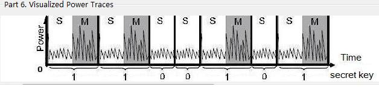

Simple power analysis (SPA) involves visually interpreting power traces, or graphs of electrical activity over time.

Ciphertext c(e.g. 5454): demonstrates the encrypted ciphertext by using the secret private key d(e.g. 101).
P and Q are two copime numbers and the module n = P*Q.
R = cd mod n is the decrypted plaintext. Square and Multiply algorithm is normally used to execute the exponentiation result of cd mod n. It is an efficient algorithm used for the fast computation of large integer powers of a number. However, it is also vulnerable to Power Analysis.

"Square and Multiply" algorithm is used to execute the exponentiation of the private key and public key during the encryption and decryption process of RSA algorithm.

As shown above, the private key in decimal will first be transformed into binary form.(e.g. 101(dec.) = 1100101(bin.)). After that we calculate the exponentiation result according to the current bit from left to right: if the current bit is 1, a multiplication operation (Res = Res*c mod n) will be carried out after a squaring operation (Res = Res2 mod n), otherwise we perform only the squaring operation without following a multiplication operation.
Since the presence of the if statement in the algorithm, "Square and Multiply" is vulnerable to "Power Analysis Attack".
The power traces between "squaring and multiplication" and "squaring" are different. "Simple Power Analysis" can recover every bit of the secure private key d through comparison and analysis of the power traces in each turn. Shown in the figure above, the private key is 1100101.
The original "Square and Multiply" algorithm could be improved through adding a dummy multiplication operation in the branch of bit "0".


No matter the current bit is "1" or "0", squaring and multiplication operation will always be carried out. We just according the current bit to choose Res_0 or Res_1 as the result in next turn.

Obviously, there are no more distinguished difference between the branches of bit "1" and bit "0", so recovering each bit of private key by comparison the power traces using SPA is no more feasible.
For more information on elliptic curve calculations, see the sub section "Simple Power Analysis" in "Power analysis" or http://en.wikipedia.org/wiki/Power_analysis#Simple_Power_Analysis.